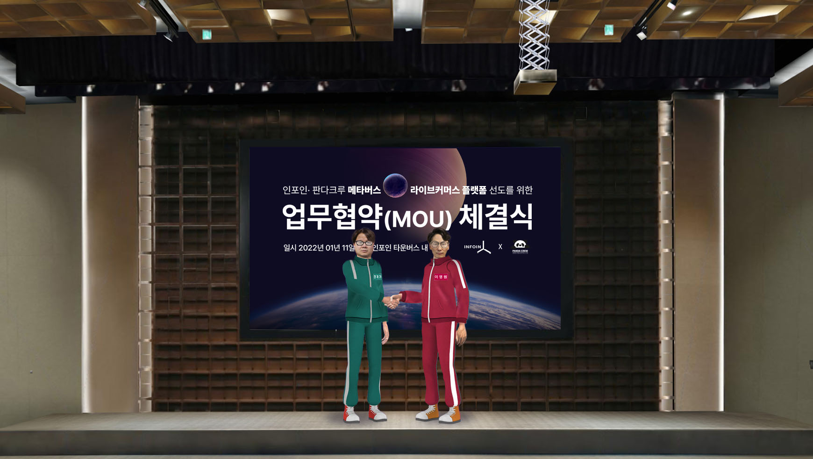
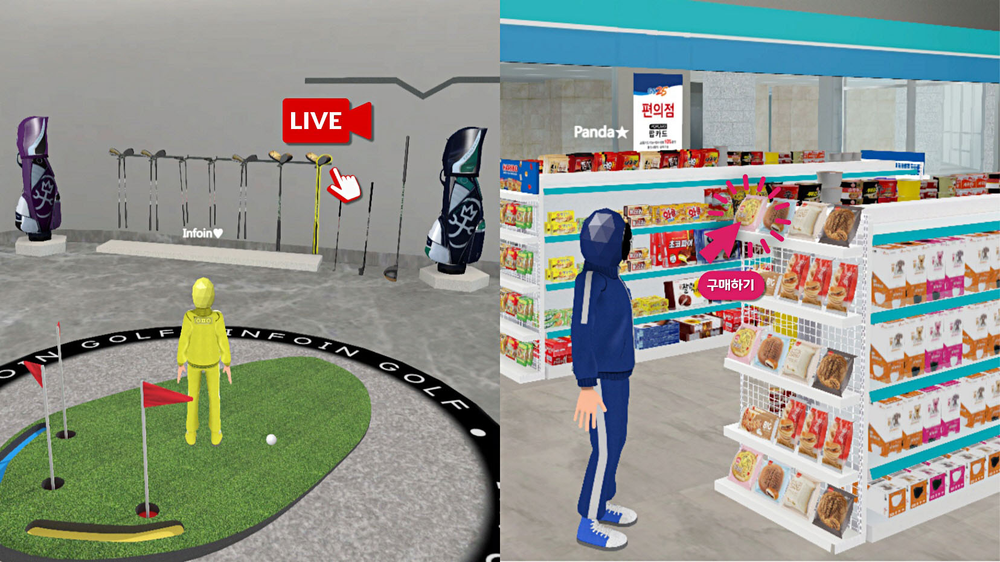

NEWS
- 판다크루의 라이브커머스 인프라와 접목, 메타버스 안에서 라이브커머스 서비스 론칭 예정
- 인포인, 3D 컨텐트 제작 및 디지털 트윈기술로 메타버스 플랫폼 ‘타운버스’ 사업 진행
- 판다크루 인플루언서와의 콜라보레이션으로 메타버스 콘텐트 다양화 및 커머스 활성화 기대

라이브커머스 플랫폼 기업 판다크루가 메타버스 소프트웨어 기업 인포인과 ‘메타버스-라이브커머스 플랫폼 선도’를 위한 MOU를 체결했다고 11일 밝혔다. 해당 MOU 체결식은 인포인의 메타버스 서비스인 ‘타운버스’ 안에서 이뤄져 눈길을 끌었다.
판다크루는 예능 콘텐트형 라이브커머스 플랫폼 ‘PANDAYA’와 네이버 쇼핑라이브 ‘부티판다’를 운영하고 있다. ‘Entertainment, E-Commerce, Contents’를 결합한 Shopatainment를 추구한다. 80명 이상의 개그맨, 배우, 셀럽, 인플루언서를 확보해 자체 OTT 콘텐트와 커머스를 결합한 새로운 개념의 라이브커머스 플랫폼을 운영·개발하고 있다. 지난해에는 2021년 중국 전자상거래 시장 점유율 2위인 비디오 플랫폼 기업 더우인(틱톡)의 해외직영점인 주식회사대라와 업무 협의 계약으로 글로벌 구매·입점/홍보 사업 제휴를 맺으며 새로운 판로를 마련하기도 했다.
인포인은 3D.R 솔루션(IoT, AI, VR·AR 등과의 융복합 실감 콘텐츠를 위해 지형, 공간, 사물 등 보이는 모든 것을 실사 3D로 제작해 제공하는 디지털 트윈 기술)을 활용해 각종 산업과 연계해 다양한 사업을 진행하고 있는 기업이다. 최근에는 실생활 연계형 메타버스 서비스인 ‘타운버스’를 개발하는 등 메타버스 플랫폼으로 사업을 확장 중이다.
양사는 이번 업무 협약을 통해 메타버스와 라이브커머스 분야에서 보유하고 있는 각자의 전문 영역에서 적극 협력해 메타버스와 라이브커머스가 결합된 새로운 이커머스 트랜드를 선도하며 관련 비즈니스를 추진한다는 계획이다. 인포인은 메타버스 플랫폼 개발과 서비스를, 판다크루는 라이브커머스 인프라 확장과 연계 콘텐트 기획을 각각 담당해 시너지를 창출할 예정이다.
실사3D 메타버스인 ‘타운버스’ 환경에 라이브커머스를 구현하면, 현재 채팅으로 소비자와 소통하며 상품을 판매하는 스트리밍 수준을 넘어 이커머스의 새로운 방향성을 제시할 수 있을 것으로 기대된다. 판매자가 구매자와 메타버스 안에서 직접 만나 3D로 상품을 둘러보며 소개하거나, 구매자가 판매자의 3D상점에서 홍보 활동을 하며 리워드를 받는 등 사실적인 쇼핑 경험이 가능해진다.

또 유명 연예인과 셀럽으로 구성된 판다크루 인플루언서로 진행하고 있는 자체 OTT형 콘텐트를 메타버스 내에서도 선보일 수 있을 것으로 기대된다. 메타버스 안에서 실사 3D 캐릭터의 셀럽과 인플루언서를 직접 만나고, 그들의 라이브쇼를 시청하기도 하며, PPL로 등장하거나 그들이 소개하는 상품을 실시간으로 구매까지 할 수 있다.
이영원 판다크루 대표는 “판매자와 소비자가 영상으로 실시간 소통하는 라이브커머스가 메타버스의 직관적인 정보 탐색 및 생생한 체험 요소와 결합한다면 차세대 글로벌 커머스 플랫폼 역할을 기대할 수 있다”고 전하며 “판다크루는 단순히 물건을 소개하고 판매하는 라이브커머스 형식이 아닌, 셀럽 등 쇼호스트와 쇼핑을 주제로 함께 즐길 수 있는 ‘라이브커머스 쇼’를 지향하는 만큼 메타버스의 엔터테인먼트 요소와 큰 시너지를 낼 수 있을 것”이라고 덧붙였다.
- 장진원 기자 jang.jinwon@joongang.co.kr